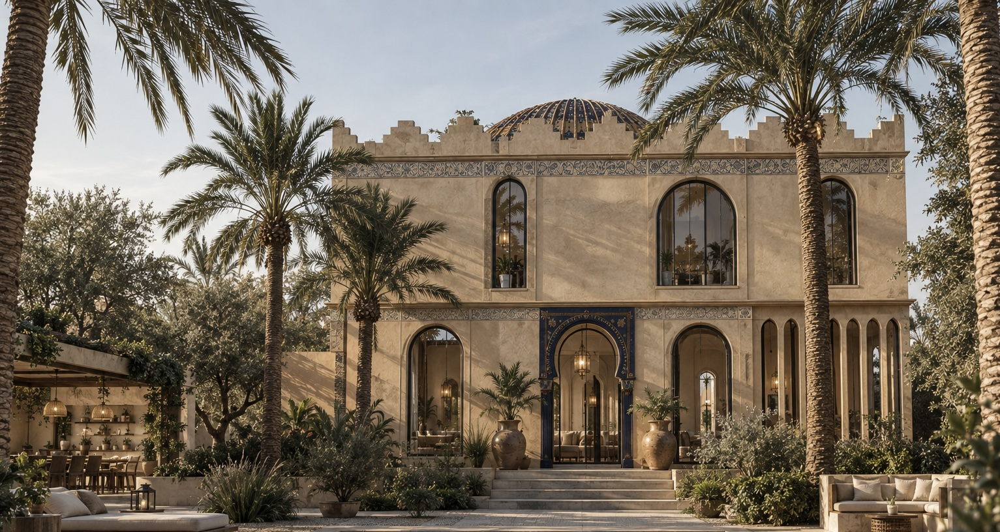
A house shaped
around the
within.
WITHIN explores a contemporary interpretation of the traditional Moroccan house, organised around a central courtyard that becomes the social heart of the home.
Spaces are arranged around this shared centre, allowing rooms, landscape, light and everyday life to continuously overlap.
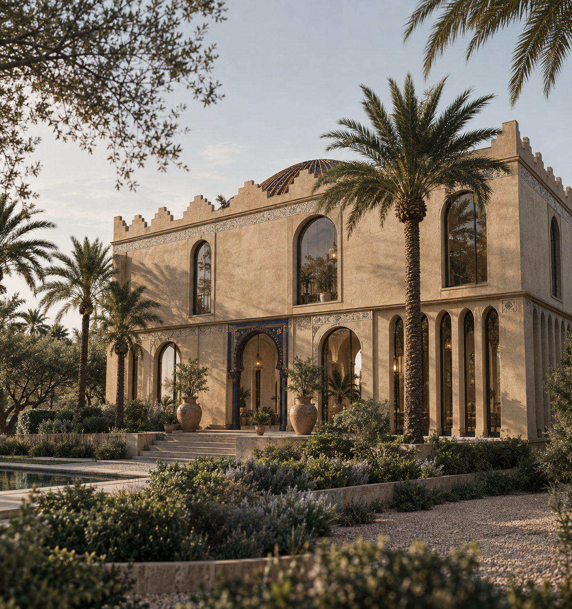
A social heart
within the house.
The central courtyard creates a shared interior landscape around which the rooms are organised. The arrangement brings light, planting and gathering spaces into the centre of the home.
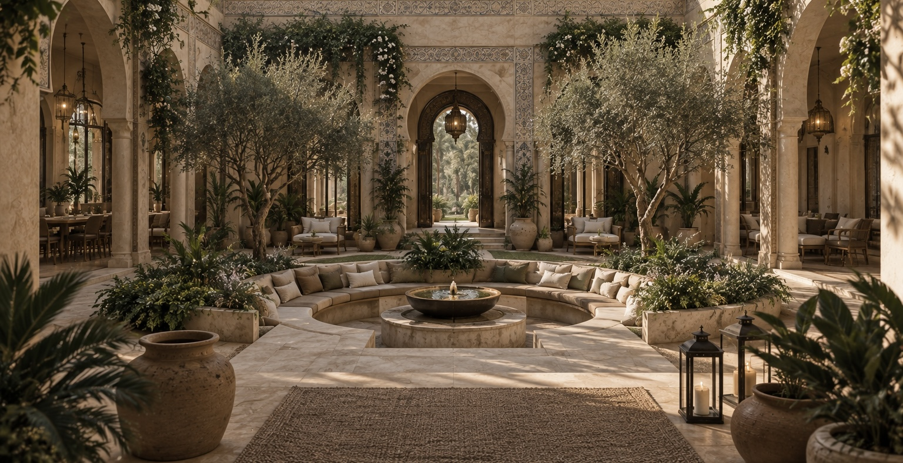
Rooms at the
perimeter.
Private spaces are pushed towards the perimeter, while the central courtyard remains open as a shared space for gathering and movement.
The house
in plan.
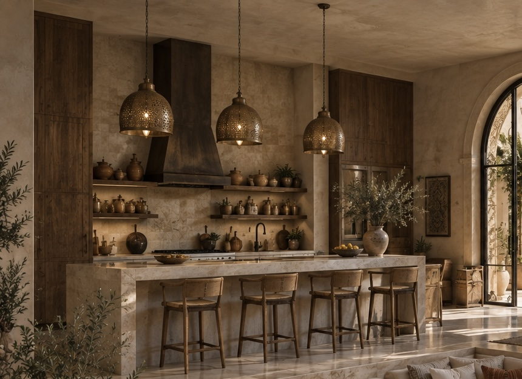
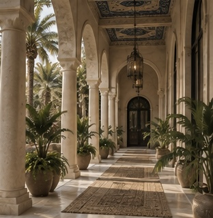
Spaces designed
to gather.
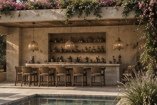
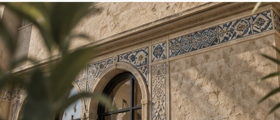
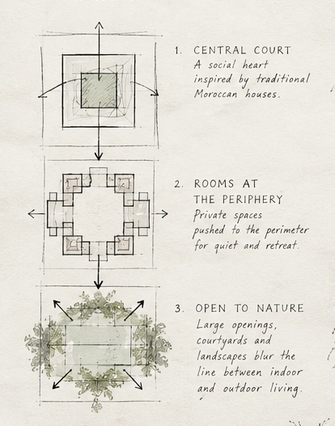
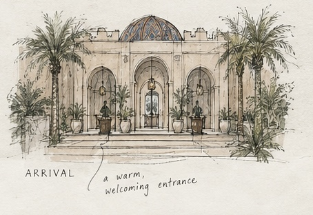
Cooking, conversation and leisure.
The kitchen and outdoor spaces are treated as connected social environments rather than separate rooms.
Sunken
seating.
A lowered conversation pit creates an intimate centre within the larger courtyard.
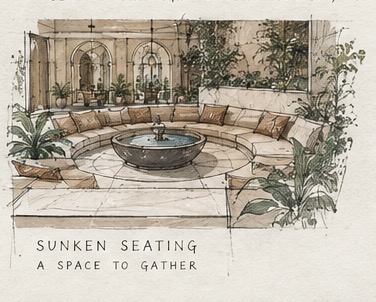
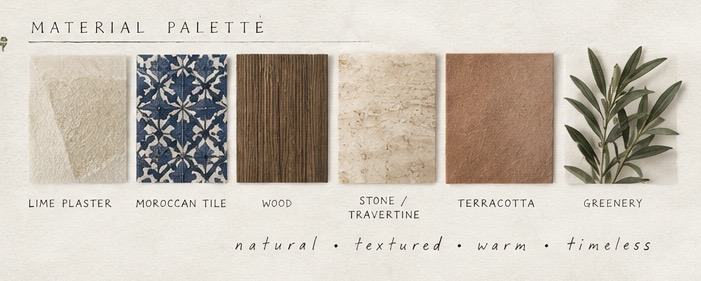
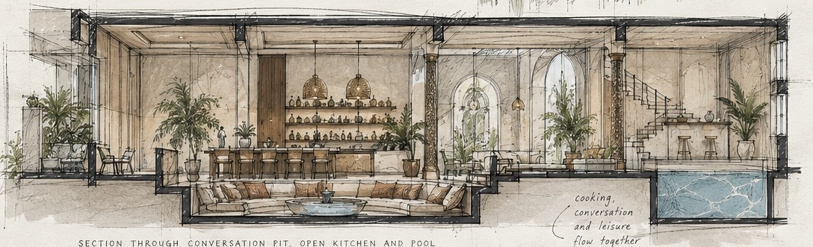
Ornament, material and memory.
Traditional Moroccan motifs are reinterpreted through tile, plaster, timber and stone to create a warm and textured architectural language.
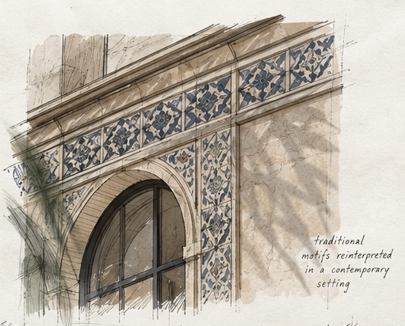
IN A CONTEMPORARY SETTING
Natural.
Textured.
Warm.
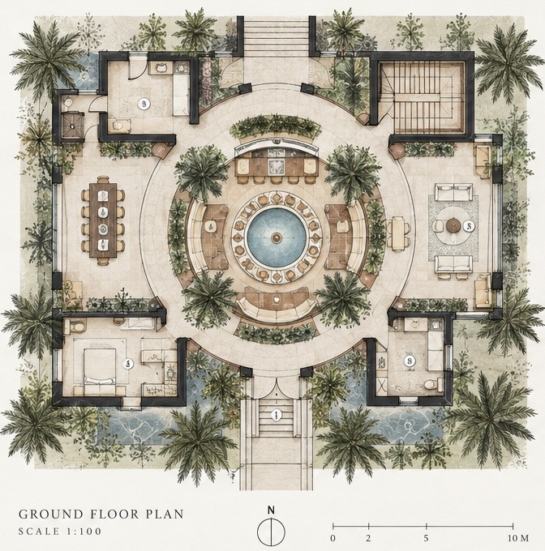
Moroccan-Inspired
Farmhouse
JAHNAVI VORA ARCHITECTS